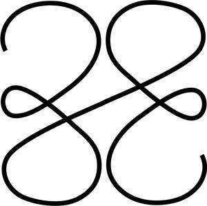

Trade Mark Journal No.2025/041 10 October 2025
UK00004271093 29 September 2025 (9,14,18,25,35)

- Class 9
- Eyewear; sunglasses; frames for sunglasses; lenses for sunglasses; straps for sunglasses; covers for sunglasses; cases for sunglasses; spectacles; frames for spectacles; lenses for spectacles; straps for spectacles; cases for spectacles; eyewear cases; cases for mobile phones; mobile phone covers; straps for mobile phones; computer cases; tablet cases; camera cases; earphones; headphones; smart watches; wearable activity trackers; parts and fittings for all of the aforesaid goods.
- Class 14
- Precious metals and their alloys; jewellery, precious and semi-precious stones; horological and chronometric instruments; jewellery products; jewellery for personal wear; costume jewellery; fashion jewellery; imitation jewellery; paste jewellery; parts and fittings for jewellery; clasps for jewellery; jewellery chains; necklaces; choker necklaces; necklace charms; pendants [jewellery]; lockets [jewellery]; closures for necklaces; jewellery charms; crucifixes as jewellery; bracelets; bracelet charms; bangle bracelets; wristlets [jewellery]; ankle bracelets; jewellery foot chains; charity bracelets; jewellery rope chain for bracelets; rings [jewellery]; earrings; ear studs; ear clips; ear ornaments in the nature of jewellery; body-piercing rings; facial jewellery; body jewellery; body costume jewellery; hat jewellery; jewellery hat pins; shoe jewellery; scarf clips being jewellery; ornaments [jewellery]; amulets [jewellery]; brooches [jewellery]; trinkets [jewellery]; pins [jewellery]; decorative pins [jewellery]; lapel pins [jewellery]; jewellery made of precious metals; jewellery in non-precious metals; jewellery made of crystal; jewellery made of glass; jewellery made of precious stones; jewellery of yellow amber; jewellery made of plastics; jewellery in semi-precious metals; jewellery stones; natural gem stones; artificial gem stones; imitation precious stones; jewellery incorporating precious stones; pearls [jewellery]; cases and boxes for jewellery; fitted jewellery pouches; jewellery rolls; clocks; watches; watch parts; watch straps; watch bands; watch bracelets; watch clasps; watch chains; cases and boxes for watches; watch pouches; figurines of precious or semi-precious metals; cuff links; tie pins; tie clips; badges of precious metals; key rings; key rings [trinkets or fobs]; key rings [split rings with trinket or decorative fob]; key fobs; charms for key rings; key rings of leather; imitation leather key rings; medallions; parts and fittings for all of the aforesaid goods.
- Class 18
- Luggage and carrying bags; umbrellas and parasols; walking sticks; collars, leashes and clothing for animals; bags; bags of leather and imitation leather; travel bags; holdalls; backpacks; handbags; evening bags; overnight bags; weekend bags; tote bags; shoulder bags; messenger bags; crossbody bags; waist bags; drawstring bags; duffle bags; school bags; reusable shopping bags; athletic bags; gym bags; beach bags; garment bags; shoe bags; boot bags; make-up bags; cosmetic bags; toiletry bags; purses; wallets; card wallets; luggage label holders; luggage tags; luggage straps; leather straps; parts and fittings for all of the aforesaid goods.
- Class 25
- Clothing, footwear, headwear; outer clothing; leisure clothing; casual clothing; sports clothing; loungewear; leather clothing; knitwear; knitted clothing; waterproof clothing; weatherproof clothing; thermal clothing; infant clothing; babies' clothing; maternity clothing; tops [clothing]; shirts; t-shirts; sport shirts; vests; singlets; blouses; crop tops; sweatshirts; hooded sweatshirts; jumpers; cardigans; tank tops; tracksuit tops; bottoms [clothing]; trousers; shorts; jeans; pants; sweatpants; leggings [trousers]; dresses; skirts; jackets; coats; gilets; blazers; ties [clothing]; belts [clothing]; underwear; lingerie; socks; nightwear; night shirts; pyjamas; swimwear; beachwear; wristbands [clothing]; gloves [clothing]; scarves; headbands [clothing]; hats; caps; sports caps and hats; footwear; leisure footwear; casual footwear; sports footwear; shoes; boots.
- Class 35
- Retail and wholesale services and online retail and wholesale services, all relating to eyewear and parts and fittings therefor, sunglasses, frames for sunglasses, lenses for sunglasses, straps for sunglasses, covers for sunglasses, cases for sunglasses, spectacles, frames for spectacles, lenses for spectacles, straps for spectacles, cases for spectacles, eyewear cases, cases for mobile phones, mobile phone covers, straps for mobile phones, computer cases, tablet cases, camera cases, earphones, headphones, smart watches, wearable activity trackers, precious metals and their alloys, jewellery, precious and semi-precious stones, horological and chronometric instruments, jewellery products, jewellery for personal wear, costume jewellery, fashion jewellery, imitation jewellery, paste jewellery, parts and fittings for jewellery, clasps for jewellery, jewellery chains, necklaces, choker necklaces, necklace charms, pendants [jewellery], lockets [jewellery], closures for necklaces, jewellery charms, crucifixes as jewellery, bracelets, bracelet charms, bangle bracelets, wristlets [jewellery], ankle bracelets, jewellery foot chains, charity bracelets, jewellery rope chain for bracelets, rings [jewellery], earrings, ear studs, ear clips, ear ornaments in the nature of jewellery, body-piercing rings, facial jewellery, body jewellery, body costume jewellery, hat jewellery, jewellery hat pins, shoe jewellery, scarf clips being jewellery, ornaments [jewellery], amulets [jewellery], brooches [jewellery], trinkets [jewellery], pins [jewellery], decorative pins [jewellery], lapel pins [jewellery], jewellery made of precious metals, jewellery in non-precious metals, jewellery made of crystal, jewellery made of glass, jewellery made of precious stones, jewellery of yellow amber, jewellery made of plastics, jewellery in semi-precious metals, jewellery stones, natural gem stones, artificial gem stones, imitation precious stones, jewellery incorporating precious stones, pearls [jewellery], cases and boxes for jewellery, fitted jewellery pouches, jewellery rolls, clocks, watches, watch parts, watch straps, watch bands, watch bracelets, watch clasps, watch chains, cases and boxes for watches, watch pouches, figurines of precious or semi-precious metals, cuff links, tie pins, tie clips, badges of precious metals, key rings, key rings [trinkets or fobs], key rings [split rings with trinket or decorative fob], key fobs, charms for key rings, key rings of leather, imitation leather key rings, medallions, luggage and carrying bags, umbrellas and parasols, walking sticks, collars, leashes and clothing for animals, bags, bags of leather and imitation leather, travel bags, holdalls, backpacks, handbags, evening bags, overnight bags and parts and fittings therefor, weekend bags, tote bags, shoulder bags, messenger bags, crossbody bags, waist bags, drawstring bags, duffle bags, school bags, reusable shopping bags, athletic bags, gym bags, beach bags, garment bags, shoe bags, boot bags, make-up bags, cosmetic bags, toiletry bags, purses, wallets, card wallets, luggage label holders, luggage tags, luggage straps, leather straps, clothing, footwear, headwear, outer clothing, leisure clothing, casual clothing, sports clothing, loungewear, leather clothing, knitwear, knitted clothing, waterproof clothing, weatherproof clothing, thermal clothing, infant clothing, babies' clothing, maternity clothing, tops [clothing], shirts, t-shirts, sport shirts, vests, singlets, blouses, crop tops, sweatshirts, hooded sweatshirts, jumpers, cardigans, tank tops, tracksuit tops, bottoms [clothing], trousers, shorts, jeans, pants, sweatpants, leggings [trousers], dresses, skirts, jackets, coats, gilets, blazers, ties [clothing], belts [clothing], underwear, lingerie, socks, nightwear, night shirts, pyjamas, swimwear, beachwear, wristbands [clothing], gloves [clothing], scarves, headbands [clothing], hats, caps, sports caps and hats, footwear, leisure footwear, casual footwear, sports footwear, shoes, boots, and clothing accessories; advertising; marketing; promotional services; organisation, operation and supervision of loyalty programmes and of sales and promotional incentive schemes; fashion show exhibitions for commercial purposes; presentation of goods on communication media, for retail purposes; provision of an on-line marketplace for buyers and sellers of goods and services; provision of space on a website for advertising goods and services of others; providing business information via a website; information, advisory and consultancy services in relation to all of the aforesaid.
33MM Studio Ltd
Representative: Wilson Gunn